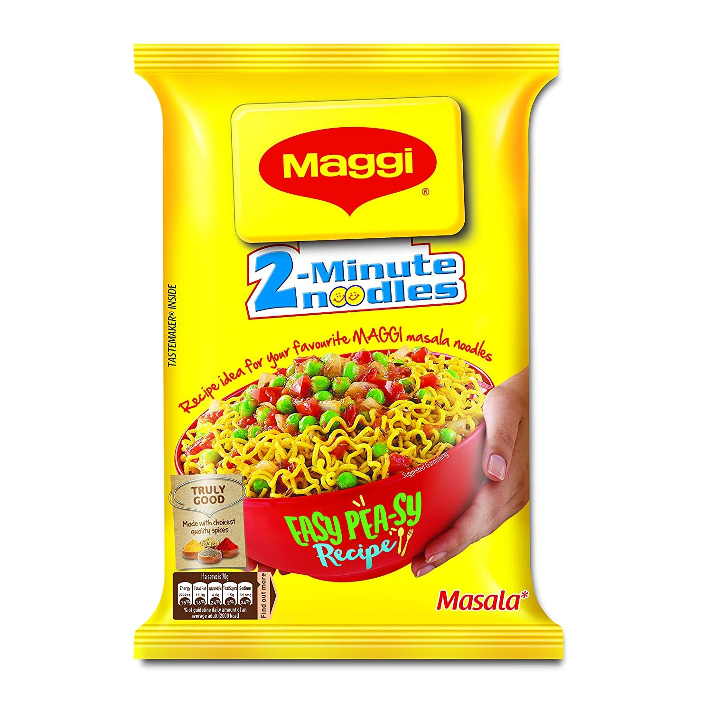

Maggi Noodles!

Description
All you need is a couple of packs of Maggi noodles, (you can find this at any South Asian grocery store), an egg, some sliced onions, green chilies, and oil.
Recipe:
-
Slice your onions finely. Boil your noodles for a minute and drain. Heat your pan on medium, add in some oil, then your whipped egg, and a dash of salt.
-
Cook until just firm, chopping your egg up into small pieces, then take it out of the pan.
-
Add in more oil to the same pan, wait for it to heat up, then add in your onions. Fry until they brown. Then add in your split chilis. Fry for a minute.